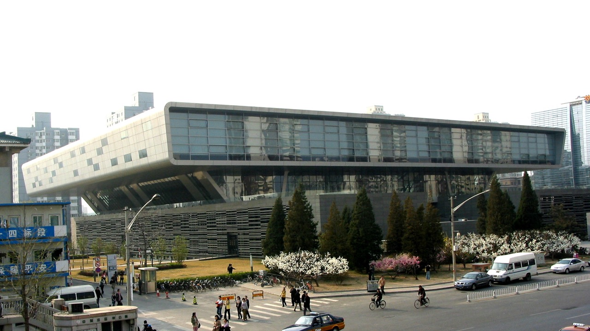
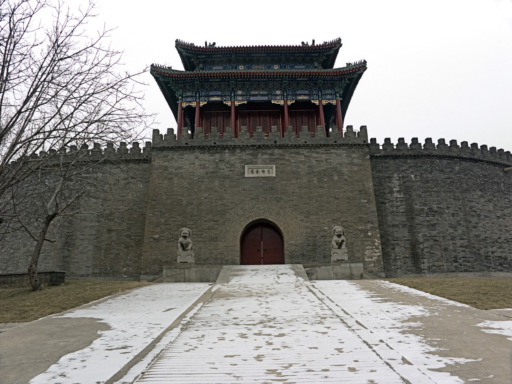
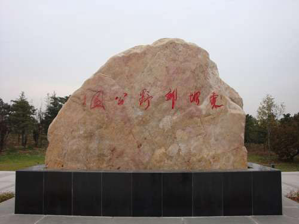
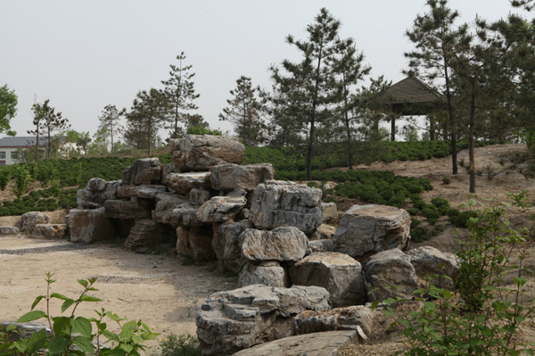
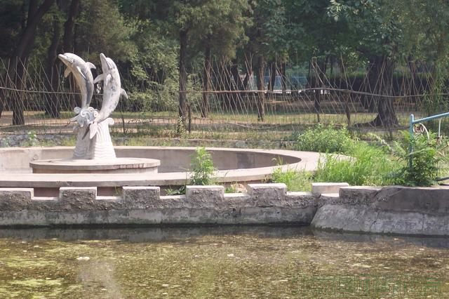
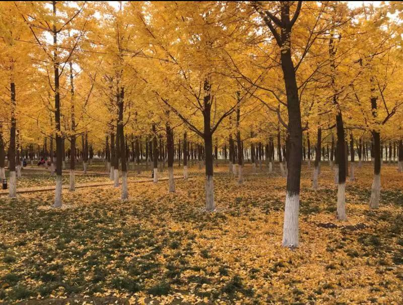

国家图书馆少年儿童馆

作品：Nlc phaseii southeast 001b.jpg
摄影：Zhangweiwu
拍摄日期（来源声明）：2009-04-04

2009年国家图书馆总馆北区建筑东南侧外观。少年儿童馆位于该建筑一、二层东南角；照片不展示少儿阅览室内部，不代表当前开放、设施或人流状态。
由来源原图等比例缩小，并进行JPEG压缩（质量参数72）；未裁切、重绘、去人物或换背景。成品为1280×720。页面按容器缩放、裁显；完整原图见来源。
照片及机械处理结果沿用各自标注的许可。保留原构图，仅按下列说明缩小和压缩。历史影像不代表当前开放、展览或季节；摄影者不因此为小程序背书。

作品：Nlc phaseii southeast 001b.jpg
摄影：Zhangweiwu
拍摄日期（来源声明）：2009-04-04
2009年国家图书馆总馆北区建筑东南侧外观。少年儿童馆位于该建筑一、二层东南角；照片不展示少儿阅览室内部，不代表当前开放、设施或人流状态。
由来源原图等比例缩小，并进行JPEG压缩（质量参数72）；未裁切、重绘、去人物或换背景。成品为1280×720。页面按容器缩放、裁显；完整原图见来源。

作品：Tuancheng Yanwuting.jpg
摄影：Endeneon
拍摄日期（来源声明）：2006-01-17（EXIF记录，相机时间未独立核实）
团城演武厅建筑历史影像；原图EXIF记录2006年1月17日，实际拍摄时间未独立核实。页面2007年3月14日为原始上传日期，不作为拍摄日期；不代表当前开放或建筑状态。
由来源原图等比例缩小，并进行JPEG压缩（质量参数72）；未放大、裁切、重绘、去人物或换背景。成品为1280×960；页面按容器缩放、裁显，完整原图见来源。

作品：东坝公园（公园名录实景图片）
摄影：未署名；来源：北京市园林绿化局(首都绿化委员会办公室)
拍摄日期（来源声明）：未标注（名录页面发布于2022-06-15）
来源与完整原图 · 官网转载条件：公共免费资料性引用并注明来源
来源公园名录所示的东坝公园园内景观或建筑历史影像；摄影者及实际拍摄日期未单独标注。仅用于公共免费的地点资料介绍，按官网转载条件注明来源；不代表园区全貌、当前设施、季节或开放状态。
保留来源原图文件及原始尺寸，未放大、裁切、重绘或换背景。成品为500×375。保留原有标记；页面按容器缩放、裁显，完整来源见链接。

作品：镇海寺郊野公园（公园名录实景图片）
摄影：未署名；来源：北京市园林绿化局(首都绿化委员会办公室)
拍摄日期（来源声明）：未标注（名录页面发布于2022-06-15）
来源与完整原图 · 官网转载条件：公共免费资料性引用并注明来源
来源公园名录所示的镇海寺郊野公园园内景观或建筑历史影像；摄影者及实际拍摄日期未单独标注。仅用于公共免费的地点资料介绍，按官网转载条件注明来源；不代表园区全貌、当前设施、季节或开放状态。
保留来源原图文件及原始尺寸，未放大、裁切、重绘或换背景。成品为600×399。保留原有标记；页面按容器缩放、裁显，完整来源见链接。

作品：南苑公园（公园名录实景图片）
摄影：未署名；来源：北京市园林绿化局(首都绿化委员会办公室)
拍摄日期（来源声明）：未标注（名录页面发布于2022-06-14）
来源与完整原图 · 官网转载条件：公共免费资料性引用并注明来源
来源公园名录所示的南苑公园园内景观或建筑历史影像；摄影者及实际拍摄日期未单独标注。仅用于公共免费的地点资料介绍，按官网转载条件注明来源；不代表园区全貌、当前设施、季节或开放状态。
保留来源原图文件及原始尺寸，未放大、裁切、重绘或换背景。成品为640×426。保留原有标记；页面按容器缩放、裁显，完整来源见链接。

作品：平房公园（公园名录实景图片）
摄影：未署名；来源：北京市园林绿化局(首都绿化委员会办公室)
拍摄日期（来源声明）：未标注（名录页面发布于2022-06-15）
来源与完整原图 · 官网转载条件：公共免费资料性引用并注明来源
来源公园名录所示的平房公园园内景观或建筑历史影像；摄影者及实际拍摄日期未单独标注。仅用于公共免费的地点资料介绍，按官网转载条件注明来源；不代表园区全貌、当前设施、季节或开放状态。
保留来源原图文件及原始尺寸，未放大、裁切、重绘或换背景。成品为800×605。保留原有标记；页面按容器缩放、裁显，完整来源见链接。